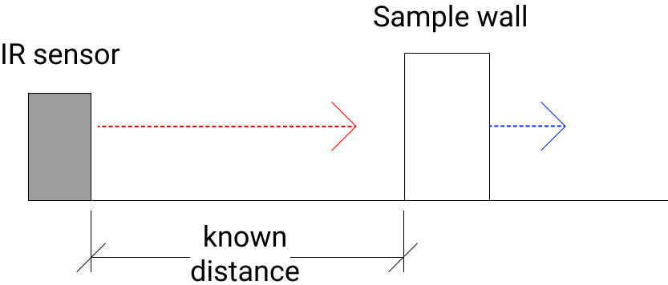

This page is dedicated to documenting the maze solving robot class project that me and two other friends did. Within this page will be a navigation bar that will be accessible via an expanding icon or be visible to your left. Outside of that, the page will go through the following topics:
- The requirements for the project and their justification
- The materials used and acquired
- An overview of the Arduino code
- The possible improvements that can be made
- Any supporting documentation that may help
The primary challenges, at least for my group, was a multitidue of things. The biggest challenge was putting all of our limited electronics experience together and then an even bigger challenge to translate that into the program that tied all of the systems together. So hopefully this extended write-up will provide helpful for anyone who finds themself making a project similar to this.
The requirements for the project were pretty straightforwards and were as follows:
- The robot will be able to traverse a corridor without bumping into walls
- The robot will be able to detect red and green that will signify the start and end of the maze
- The robot must be able to navigate to the end of a maze
- The robot must retrieve a ball at the end of the maze and bring it back to the start
- The robot must fit inside of the maze walls
- The robot cannot traverse over the walls of the maze to get to the end
- The robot must cost less than $250 to produce
These requirements were made so that we would have to put some thought into the design and execution of the robot. The size and cost constraints meant we need to consider how to fit the instrumentation and motors onto the robot as well as how to exceed the allocated budget. On the other hand the color-detection and ball grabbing were meant to simplify our implementation of the robot by keeping our goals very straightforward. The rest of the requirements either sought to eliminate any cheesy solutions or as an addition challenge for the group.
The Bill of Materials section will outline the numerous electrical parts and related components that were acquired to complete this project. The table will include a model number and a vendor when available as well.
| Name | Model Number | Subsystem | Quantity | Unit Cost (USD) | Documentation Available? |
|---|---|---|---|---|---|
| TCS3200 Color Sensor Board | N/A | Color sensing | 1 | N/A | Partial |
| IR Sensor | GP2Y0A41SK0F | Navigation | 2 | 13.95 | Yes |
| Ultrasonic Sensor | HC-SR04 | Navigation | 1 | 3.95 | Yes |
| Motor | N/A | Navigation | 2 | N/A | N/A |
| Servo motor | 31311S | Ball Grabbing | 1 | N/A | N/A |
| Arduino Uno | A000066 | Central processing | 1 | 22.00 | Yes |
| Adafruit Motor Shield | 1438 | Navigation | 1 | 19.95 | Yes |
So how do all of these components fit together? The IR sensors, and the two motors are for the navigation system as well and will also feature control system that will prevent the robot from colliding with the walls. The ultrasonic sensor will be mounted on the front of the robot and will detect walls in front of it as well as the ball at the end of the maze. Speaking of the end of the maze, the servo motor will be responsible for grabbing the ball at the end of the maze and the color sensor will be responsible for detecting the start and end of the maze.
For the Arduino code that would eventually tie all of the systems together, a couple of other programs will be necessary to prepare for the final program that will complete the objectives. A calibration program for the IR sensor is definitely required, while programs for testing the color sensor and ultrasonic sensor aren’t strictly necessary (as they’ll be in the final program in some shape or form) but recommended. As for the final program, it can be separated into a couple of distinct subsystems, the corridor navigation sub-routine; the color-sensing sub-routine; and the ball grabbing sub-routine.
IR Sensor Calibration
The IR sensor calibration is relatively simple but requires a physical rig. The physical rig must be a straight, flat white wall, and must be at a preset distance away from the IR sensor. Similarly, the IR sensor should be mounted in a way so that it is straight and the detectors and emitters are facing the wall.
The white wall requirement is there to ensure that the IR sensor reads a signal that is as close to the output signal as possible. In addition, the wall is meant to be movable as you’ll probably want more than one measurement. Your calibration rig should look similar to the one below and the sensor output characteristics will be below that.
As for the program for the IR sensor calibration, some things should be kept in mind. First, the Arduino reads inputs in bits so we’ll need to convert that to volts (the documentation for this is found here). Put in short, the Arduino assigns a value in bits to the corresponding voltage and we need to convert that back to voltage as those units are more meaningful to us than bits.
From there, we need the sensor to send two signals, one low frequency signal and one high frequency signal. The low frequency signal is to make sure that the high frequency signal that is performing the actual reading is as clean as possible. The readings should be recorded and printed live on the console so that you may copy them into a spreadsheet for curve fitting. At its simplest form, with the bare minimum of parts for the test rig, it should look similar to the below pseudocode.
initialize rawSens, distFinal,voltConvert;
initialize console logging;
#define sensorPin;
rawSens= analogRead(sensorPin);
voltConvert = rawSens * 0.0049;
print(“Voltage value:”);
print(val);
delay(1000);
For reference here's how our final voltage to distance function looked like in Arduino, where we fit our data to a 6th power curve (this was overkill by the way, don't do this).
int distanceRead(int raw){
float val = 0.0049 * raw;
int distance = 39.042 * val^6 - 437.12 * val^5
+ 1957.3 * val^4 -4473 * val^3 + 5527 * val^2 - 3620.9 * val + 1137.9;
return distance;
}
Wall Avoidance System

The wall avoidance system is a pretty simple example of a negative feedback control system. A negative feedback system aims to control the output of a system by using the current output of the system to correct the input so that it is closer to the desired output. For example, when you take a shower and the water is too hot, you turn the valve so that the water is cooler.
In the case of the maze solving robot, we want the robot to stay a set distance away from the walls at all times, so we’ll need to adjust the speed of the two motors in order to accomplish this. Our implementation of this is done in the form of a PID controller (or more specifically a P controller) which computes an error value that will be used to modify the input so that its closer to our desired value. Also note that the below pseudocode assumes you’re only using one IR sensor.
initialize rawLeft, distLeft;
initialize speedLeft;
initialize targetLeft, relOffset, l, corrFactor;
#define motorRight, motorLeft, leftIR;
#define convertFunc; // Function for converting sensor voltage to distance
targetLeft = 10; //in mm
relOffset = 0;
corrFactor = 0;
speedLeft = 62;
motorRight →setSpeed(62);
while (l /= 100){
rawLeft = analogRead(leftIR);
motorLeft → setSpeed(speedLeft);
motorRight, motorLeft → run(FORWARD);
millis(50); // run motors for 50ms
function distanceCalc(rawLeft){
distLeft = rawLeft* 0.0049 * convertFunc;
return distLeft;
}
function errorCalc(distLeft){
relOffset = targetLeft - distLeft;
return relOffset;
}
speedLeft= 62 - corrFactor * relOffset;
l ++;
}
Overall Robot Code Structure
So the overall structure of the code should probably be using switches as there’s numerous situations that the robot needs to handle. It makes the code easier to read than having some 6 or so if else statements and isolates whatever subroutines you have in your code. In addition, the maze solving algorithm for the robot should be a left-hand wall following algorithm. There are numerous other maze solving algorithms but those are aimed more towards machine learning and mapping, which are outside the scope of the class.
switch(caseVal){
case robotInit{}
case robotDetectColor{}
case robotForwards{}
case robotReverse{}
case robotTurnLeft{}
case robotGrabBall{}
}
And below is some pseudocode of how the robot can be initialized.
#define btnPin;
boolean btnStat;
case robotInit{
btnStat = false;
serial.begin(9600);
serial.print(“Robot start, waiting for input”);
while (btnStat = false){
btnStat = read(btnPin);
if btnStat = true{
return caseVal = robotForwards;
}
else{
continue;
}
}
break;
}
This section is dedicated to listing out some of the potential improvements that could be made to our robot. While some of these issues probably won’t show up in your implementation, these are still good things to look out for. Note: This section does not include improvements to any testing procedures.
Hardware Fixes
The hardware improvements or fixes for our solution to the robot are fairly straightforwards. The biggest one would be to include a voltage regulator between the power supply and the Arduino board along with an indicator LED to notify us when the board isn’t getting enough power. This would ensure that the Arduino operates at a consistent level whenever possible.
After that, it’s a split between two things; having more soldered connections instead, and having everything mounted securely via screws and etc. These improvements would mostly make the robot feel more robust, but would also ensure that the robot components won’t come apart halfway through a run.
Software Fixes
As for software improvements, they’re mostly aimed at readability rather than functionality. It’s probably prudent to say that our implementation of the maze solving robot’s program was probably wrong in several cases. For our robot, I’d remove the exclude the IR sensor on the right side of the robot from the control system; it’s overkill and made the overall program messier.
In addition, our program almost definitely needed a while loop for the straight corridor navigation subroutine. Other than that, using camel casing for our variables would be great for readability and having better naming conventions for files would make navigating through them significantly easier than it is now.
Here is some of the supporting documentation that should help you, should you choose to use some of or all of the components that we used.
- Ultrasonic Sensor Datasheet
- IR Sensor Datasheet
- Adafruit Motor Shield Documentation
- Arduino Uno Documentation
- TCS3200 Chip Documentation
- Arduino Uno Setup
In addition, feel free to look at the Github Repo of the project for reference.